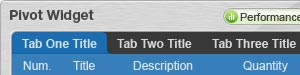

Building rich internet applications (RIA) in Java by combining the enhanced productivity and usability features of a modern RIA toolkit with the robustness of the Java platform.
Why Pivot?

Pivot applications are written using a combination of Java and XML and can be run either as an applet or as a standalone (optionally offline) desktop application. Pivot includes features that make building modern GUI applications much easier, including declarative UI, data binding, effects and transitions, and web services integration.